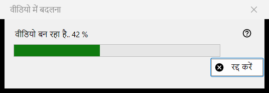
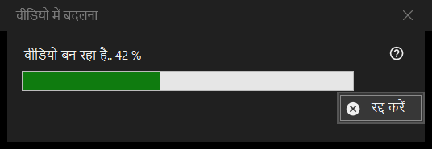

वीडियो में बदलना
यह किस लिए है
वीडियो में बदलना की प्रगति विंडो: यह एनिमेटेड GIF, WebP या APNG को MP4 में बदलती है और फिर मूल फ़ाइल हटा देती है। यह रूपांतरण की पुष्टि करने के बाद खुलती है, काम खत्म होने तक व्यूअर के ऊपर रहती है, और इसमें एक ही बटन है, रद्द करें।


इस क्रम में
- कोई एनिमेटेड चित्र दिखाएँ।
- चित्र मेनू में वीडियो में बदलें.. चुनें, या टूलबार का वीडियो में बदलें बटन दबाएँ; दोनों तभी होते हैं जब स्क्रीन पर कोई एनिमेशन हो, और कोई कीबोर्ड शॉर्टकट नहीं है।
- पुष्टि पढ़ें और बदलें दबाएँ।
- अगर FFmpeg डाउनलोड करने को कहा जाए तो हाँ कहें।
- बार देखें, या रद्द करें दबाएँ।
- व्यूअर नया MP4 खोल देता है।
तत्व
रूपांतरण शुरू करना
यह कमांड केवल एनिमेशन के लिए दी जाती है, स्थिर चित्र या वीडियो के लिए कभी नहीं, और व्यूअर इसे सुरक्षित कंटेनर के लिए, या ऐसी जगह के लिए मना कर देता है जहाँ फ़ाइल के पास कुछ लिखा नहीं जा सकता। काम शुरू होते ही प्लेबैक रुक जाता है।
पुष्टि
उसमें लिखा होता है: मूल फ़ाइल नए MP4 में बदली जाएगी, और मूल फ़ाइल रीसायकल बिन में गए बिना स्थायी रूप से हटा दी जाती है। अगर एनिमेशन में पारदर्शिता है तो वह जोड़ता है: पारदर्शिता को काले रंग से भर दिया जाएगा। डिफ़ॉल्ट उत्तर रद्द करें है। चेक बॉक्स प्रोग्राम बंद होने तक दोबारा न पूछें केवल व्यूअर बंद होने तक चलता है; वह कभी सहेजा नहीं जाता।
FFmpeg
रूपांतरण FFmpeg का उपयोग करता है, जो प्रोग्राम का हिस्सा नहीं है। अगर वह न हो तो डाउनलोड के बारे में एक बार पूछा जाता है (सवाल में आकार दिखता है; फ़ाइल प्रोजेक्ट की साइट से आती है, स्थानीय रूप से सहेजी जाती है और GPL के तहत मुक्त सॉफ़्टवेयर है)। नहीं कहने पर प्रक्रिया यहीं रुक जाती है और कुछ बनाया या हटाया नहीं जाता।
प्रगति विंडो
शीर्षक में वीडियो बन रहा है.. प्रतिशत के साथ लिखा होता है, और बार उसके साथ चलता है। जब एनिमेशन की लंबाई पता न हो, तो बार बिना किसी संख्या के बस आगे-पीछे चलता रहता है। रद्द करें, Esc कुंजी और बंद करने का बटन तीनों का मतलब एक ही है: विंडो थोड़ी देर रुकी रहती है जब तक एनकोडर सचमुच बंद नहीं हो जाता, फिर बंद हो जाती है और व्यूअर बताता है रूपांतरण रद्द किया गया। इस दौरान व्यूअर का उपयोग नहीं किया जा सकता।
आपको क्या मिलता है
उसी फ़ोल्डर में उसी नाम का एक MP4 (नाम लिया हुआ हो तो कोष्ठक में संख्या जुड़ जाती है), एनिमेशन की फ़्रेम दर पर, 1 से 50 फ़्रेम प्रति सेकंड के बीच। वह अस्थायी नाम से लिखा जाता है और तैयार होने पर उसका नाम बदला जाता है। मूल फ़ाइल तभी हटाई जाती है जब MP4 अपने अंतिम नाम से मौजूद हो और जाँच लिया गया हो कि उसमें पूरा एनिमेशन है। स्टेटस बार में पूर्ण लिखा आता है और व्यूअर वीडियो दिखाता है।
कुछ गड़बड़ होने पर
मूल फ़ाइल बनी रहती है और स्टेटस बार कारण बताता है: वीडियो नहीं बनाया जा सका (कारण के साथ), वीडियो बन गया पर मूल फ़ाइल नहीं हटाई जा सकी, या वीडियो की पूर्णता जाँची नहीं जा सकी और मूल फ़ाइल रखी गई। असफल प्रयास मूल फ़ाइल को छुए बिना छोड़ता है, अस्थायी फ़ाइल हटा देता है और विवरण लॉग में लिखता है।